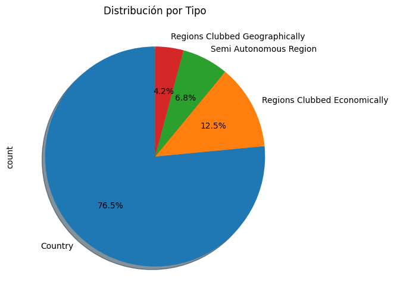
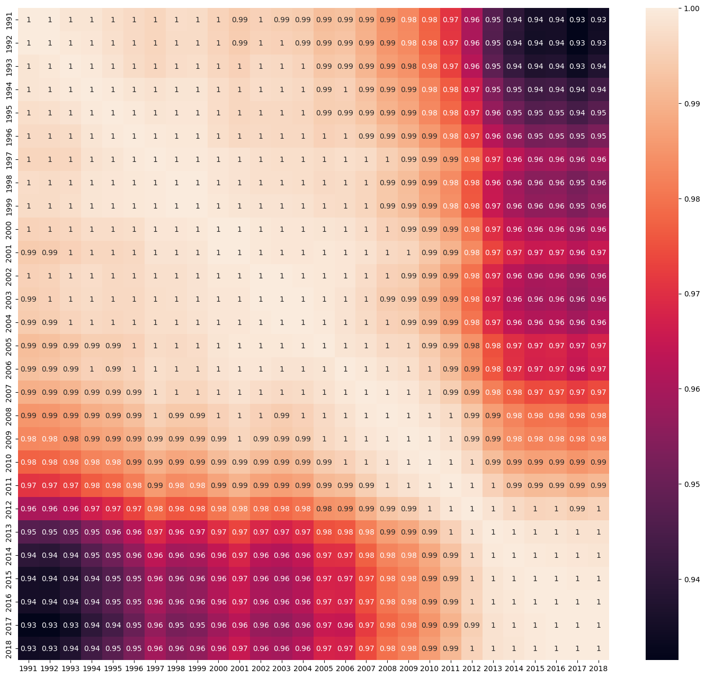
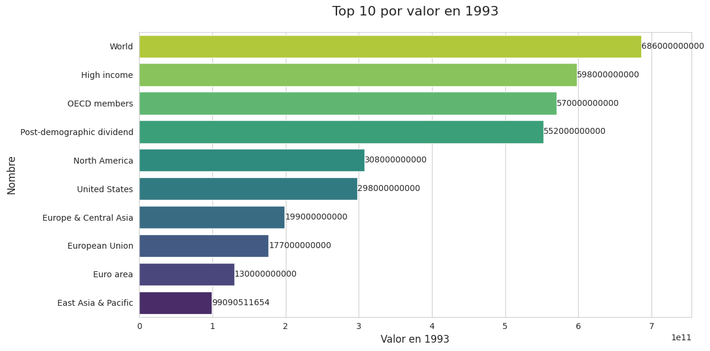
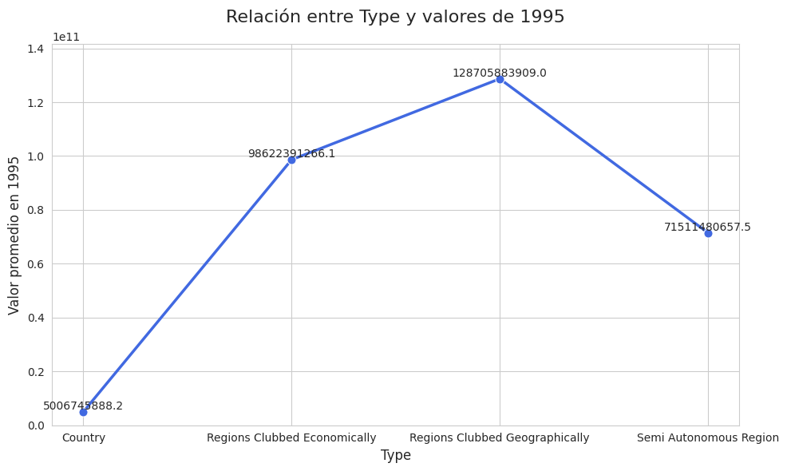

import pandas as pd # libreria para manejar dataframe
import numpy as np
# Datos de ejemplo: 7 filas con 5 columnas
data = {
'Nombre': ['Ana', 'Luis', 'Carlos', 'Sofía', 'Marta', 'Pedro', 'Lucía'],
'Edad': [25, 30, 22, 28, 35, 40, 27],
'Ciudad': ['Bogotá', 'Medellín', 'Cali', 'Barranquilla', 'Manizales', 'Cartagena', 'Pereira'],
'Puntaje': [85, 90, 78, 88, 92, 80, 87],
'Activo': [True, True, False, True, False, True, np.nan]
}
# Crear DataFrame
df = pd.DataFrame(data)
# Mostrar el DataFrame
df
| Nombre | Edad | Ciudad | Puntaje | Activo | |
|---|---|---|---|---|---|
| 0 | Ana | 25 | Bogotá | 85 | True |
| 1 | Luis | 30 | Medellín | 90 | True |
| 2 | Carlos | 22 | Cali | 78 | False |
| 3 | Sofía | 28 | Barranquilla | 88 | True |
| 4 | Marta | 35 | Manizales | 92 | False |
| 5 | Pedro | 40 | Cartagena | 80 | True |
| 6 | Lucía | 27 | Pereira | 87 | NaN |
df
| Nombre | Edad | Ciudad | Puntaje | Activo | |
|---|---|---|---|---|---|
| 0 | Ana | 25 | Bogotá | 85 | True |
| 1 | Luis | 30 | Medellín | 90 | True |
| 2 | Carlos | 22 | Cali | 78 | False |
| 3 | Sofía | 28 | Barranquilla | 88 | True |
| 4 | Marta | 35 | Manizales | 92 | False |
| 5 | Pedro | 40 | Cartagena | 80 | True |
| 6 | Lucía | 27 | Pereira | 87 | NaN |
df.describe()
| Edad | Puntaje | |
|---|---|---|
| count | 7.000000 | 7.000000 |
| mean | 29.571429 | 85.714286 |
| std | 6.133437 | 5.122313 |
| min | 22.000000 | 78.000000 |
| 25% | 26.000000 | 82.500000 |
| 50% | 28.000000 | 87.000000 |
| 75% | 32.500000 | 89.000000 |
| max | 40.000000 | 92.000000 |
import pandas as pd # libreria para manejar dataframe
df=pd.read_csv("/content/Military Expenditure.csv")
df
| Name | Code | Type | Indicator Name | 1960 | 1961 | 1962 | 1963 | 1964 | 1965 | ... | 2009 | 2010 | 2011 | 2012 | 2013 | 2014 | 2015 | 2016 | 2017 | 2018 | |
|---|---|---|---|---|---|---|---|---|---|---|---|---|---|---|---|---|---|---|---|---|---|
| 0 | Aruba | ABW | Country | Military expenditure (current USD) | NaN | NaN | NaN | NaN | NaN | NaN | ... | NaN | NaN | NaN | NaN | NaN | NaN | NaN | NaN | NaN | NaN |
| 1 | Afghanistan | AFG | Country | Military expenditure (current USD) | NaN | NaN | NaN | NaN | NaN | NaN | ... | 2.518695e+08 | 2.981469e+08 | 3.258070e+08 | 2.385834e+08 | 2.171941e+08 | 2.682271e+08 | 1.995186e+08 | 1.858783e+08 | 1.914071e+08 | 1.980863e+08 |
| 2 | Angola | AGO | Country | Military expenditure (current USD) | NaN | NaN | NaN | NaN | NaN | NaN | ... | 3.311193e+09 | 3.500795e+09 | 3.639496e+09 | 4.144635e+09 | 6.090752e+09 | 6.841864e+09 | 3.608299e+09 | 2.764055e+09 | 3.062873e+09 | 1.983614e+09 |
| 3 | Albania | ALB | Country | Military expenditure (current USD) | NaN | NaN | NaN | NaN | NaN | NaN | ... | 1.827369e+08 | 1.858932e+08 | 1.970068e+08 | 1.832047e+08 | 1.800155e+08 | 1.781204e+08 | 1.323507e+08 | 1.308532e+08 | 1.443827e+08 | 1.804887e+08 |
| 4 | Andorra | AND | Country | Military expenditure (current USD) | NaN | NaN | NaN | NaN | NaN | NaN | ... | NaN | NaN | NaN | NaN | NaN | NaN | NaN | NaN | NaN | NaN |
| ... | ... | ... | ... | ... | ... | ... | ... | ... | ... | ... | ... | ... | ... | ... | ... | ... | ... | ... | ... | ... | ... |
| 259 | Kosovo | XKX | Country | Military expenditure (current USD) | NaN | NaN | NaN | NaN | NaN | NaN | ... | 2.722709e+07 | 3.857812e+07 | 5.096886e+07 | 4.339040e+07 | 4.859768e+07 | 5.357579e+07 | 4.998416e+07 | 5.193762e+07 | 5.726263e+07 | 6.334407e+07 |
| 260 | Yemen, Rep. | YEM | Country | Military expenditure (current USD) | NaN | NaN | NaN | NaN | NaN | NaN | ... | 1.420775e+09 | 1.448153e+09 | 1.612254e+09 | 1.618840e+09 | 1.648751e+09 | 1.714831e+09 | NaN | NaN | NaN | NaN |
| 261 | South Africa | ZAF | Country | Military expenditure (current USD) | 69999972.0 | 113749954.5 | 186199925.5 | 188999924.4 | 271599891.4 | 289449884.2 | ... | 3.592688e+09 | 4.188168e+09 | 4.594154e+09 | 4.489590e+09 | 4.118208e+09 | 3.892469e+09 | 3.488868e+09 | 3.169756e+09 | 3.638937e+09 | 3.639879e+09 |
| 262 | Zambia | ZMB | Country | Military expenditure (current USD) | NaN | NaN | NaN | NaN | NaN | NaN | ... | 2.209623e+08 | 2.801878e+08 | 3.091138e+08 | 3.463014e+08 | 3.813458e+08 | 4.436044e+08 | 3.724476e+08 | 2.995048e+08 | 3.396645e+08 | 3.780254e+08 |
| 263 | Zimbabwe | ZWE | Country | Military expenditure (current USD) | NaN | NaN | NaN | NaN | NaN | 15600000.0 | ... | NaN | 9.829300e+07 | 1.984380e+08 | 3.182720e+08 | 3.567000e+08 | 3.681000e+08 | 3.766770e+08 | 3.580650e+08 | 3.405220e+08 | 4.203640e+08 |
264 rows × 63 columns
df
#Analitica descriptiva
df.info()
<class 'pandas.core.frame.DataFrame'>
RangeIndex: 264 entries, 0 to 263
Data columns (total 63 columns):
# Column Non-Null Count Dtype
--- ------ -------------- -----
0 Name 264 non-null object
1 Code 264 non-null object
2 Type 264 non-null object
3 Indicator Name 264 non-null object
4 1960 79 non-null float64
5 1961 84 non-null float64
6 1962 93 non-null float64
7 1963 98 non-null float64
8 1964 98 non-null float64
9 1965 104 non-null float64
10 1966 104 non-null float64
11 1967 105 non-null float64
12 1968 113 non-null float64
13 1969 113 non-null float64
14 1970 121 non-null float64
15 1971 122 non-null float64
16 1972 123 non-null float64
17 1973 130 non-null float64
18 1974 128 non-null float64
19 1975 128 non-null float64
20 1976 132 non-null float64
21 1977 137 non-null float64
22 1978 136 non-null float64
23 1979 138 non-null float64
24 1980 140 non-null float64
25 1981 143 non-null float64
26 1982 137 non-null float64
27 1983 136 non-null float64
28 1984 142 non-null float64
29 1985 147 non-null float64
30 1986 143 non-null float64
31 1987 147 non-null float64
32 1988 145 non-null float64
33 1989 154 non-null float64
34 1990 158 non-null float64
35 1991 160 non-null float64
36 1992 167 non-null float64
37 1993 185 non-null float64
38 1994 187 non-null float64
39 1995 184 non-null float64
40 1996 186 non-null float64
41 1997 187 non-null float64
42 1998 182 non-null float64
43 1999 184 non-null float64
44 2000 189 non-null float64
45 2001 190 non-null float64
46 2002 193 non-null float64
47 2003 199 non-null float64
48 2004 199 non-null float64
49 2005 201 non-null float64
50 2006 197 non-null float64
51 2007 195 non-null float64
52 2008 201 non-null float64
53 2009 197 non-null float64
54 2010 196 non-null float64
55 2011 194 non-null float64
56 2012 199 non-null float64
57 2013 202 non-null float64
58 2014 203 non-null float64
59 2015 198 non-null float64
60 2016 197 non-null float64
61 2017 195 non-null float64
62 2018 196 non-null float64
dtypes: float64(59), object(4)
memory usage: 130.1+ KB
df.describe()
| 1960 | 1961 | 1962 | 1963 | 1964 | 1965 | 1966 | 1967 | 1968 | 1969 | ... | 2009 | 2010 | 2011 | 2012 | 2013 | 2014 | 2015 | 2016 | 2017 | 2018 | |
|---|---|---|---|---|---|---|---|---|---|---|---|---|---|---|---|---|---|---|---|---|---|
| count | 7.900000e+01 | 8.400000e+01 | 9.300000e+01 | 9.800000e+01 | 9.800000e+01 | 1.040000e+02 | 1.040000e+02 | 1.050000e+02 | 1.130000e+02 | 1.130000e+02 | ... | 1.970000e+02 | 1.960000e+02 | 1.940000e+02 | 1.990000e+02 | 2.020000e+02 | 2.030000e+02 | 1.980000e+02 | 1.970000e+02 | 1.950000e+02 | 1.960000e+02 |
| mean | 4.482374e+09 | 4.450649e+09 | 4.520297e+09 | 4.462435e+09 | 4.525730e+09 | 4.429380e+09 | 5.098436e+09 | 5.757744e+09 | 5.661456e+09 | 5.866198e+09 | ... | 5.919239e+10 | 6.289206e+10 | 6.823127e+10 | 6.767465e+10 | 6.782427e+10 | 6.788223e+10 | 6.553286e+10 | 6.562135e+10 | 6.927640e+10 | 7.216267e+10 |
| std | 1.447959e+10 | 1.486998e+10 | 1.560037e+10 | 1.551553e+10 | 1.552208e+10 | 1.544076e+10 | 1.817987e+10 | 2.092876e+10 | 2.133673e+10 | 2.175941e+10 | ... | 1.976434e+11 | 2.067953e+11 | 2.188292e+11 | 2.152426e+11 | 2.112636e+11 | 2.095356e+11 | 2.002215e+11 | 2.008000e+11 | 2.091964e+11 | 2.202652e+11 |
| min | 0.000000e+00 | 0.000000e+00 | 0.000000e+00 | 0.000000e+00 | 0.000000e+00 | 0.000000e+00 | 0.000000e+00 | 0.000000e+00 | 0.000000e+00 | 0.000000e+00 | ... | 0.000000e+00 | 0.000000e+00 | 0.000000e+00 | 0.000000e+00 | 0.000000e+00 | 0.000000e+00 | 0.000000e+00 | 0.000000e+00 | 0.000000e+00 | 0.000000e+00 |
| 25% | 3.205030e+07 | 2.571702e+07 | 2.484204e+07 | 2.866130e+07 | 3.662134e+07 | 3.396381e+07 | 3.803623e+07 | 3.554479e+07 | 2.040000e+07 | 2.286154e+07 | ... | 2.148242e+08 | 2.195343e+08 | 2.592131e+08 | 2.309348e+08 | 2.510677e+08 | 2.491632e+08 | 2.488889e+08 | 2.607297e+08 | 2.851254e+08 | 2.945764e+08 |
| 50% | 1.408889e+08 | 1.200573e+08 | 1.700342e+08 | 1.824402e+08 | 1.891038e+08 | 2.048374e+08 | 2.388078e+08 | 2.519307e+08 | 2.727273e+08 | 2.636364e+08 | ... | 2.115785e+09 | 2.136473e+09 | 2.484600e+09 | 2.589776e+09 | 2.435637e+09 | 2.355992e+09 | 2.415996e+09 | 2.455784e+09 | 2.328157e+09 | 2.406164e+09 |
| 75% | 8.240486e+08 | 7.590874e+08 | 8.332295e+08 | 8.987564e+08 | 1.144744e+09 | 8.919075e+08 | 1.009040e+09 | 1.123833e+09 | 1.119925e+09 | 1.380000e+09 | ... | 1.783128e+10 | 1.682419e+10 | 1.823214e+10 | 1.875641e+10 | 1.937015e+10 | 2.031822e+10 | 1.927764e+10 | 1.785398e+10 | 2.147698e+10 | 1.832208e+10 |
| max | 6.777699e+10 | 7.161496e+10 | 7.889139e+10 | 8.097281e+10 | 8.148150e+10 | 8.364532e+10 | 9.752720e+10 | 1.120000e+11 | 1.180000e+11 | 1.210000e+11 | ... | 1.550000e+12 | 1.630000e+12 | 1.730000e+12 | 1.740000e+12 | 1.740000e+12 | 1.740000e+12 | 1.640000e+12 | 1.630000e+12 | 1.700000e+12 | 1.780000e+12 |
8 rows × 59 columns
df['1991'].describe()
| 1991 | |
|---|---|
| count | 1.600000e+02 |
| mean | 2.917715e+10 |
| std | 9.984308e+10 |
| min | 0.000000e+00 |
| 25% | 1.106325e+08 |
| 50% | 1.300284e+09 |
| 75% | 1.065080e+10 |
| max | 6.850000e+11 |
#Limpieza de nulos
df.isnull().sum()
| 0 | |
|---|---|
| Name | 0 |
| Code | 0 |
| Type | 0 |
| Indicator Name | 0 |
| 1960 | 185 |
| ... | ... |
| 2014 | 61 |
| 2015 | 66 |
| 2016 | 67 |
| 2017 | 69 |
| 2018 | 68 |
63 rows × 1 columns
df_completo_sin_nulos=df.dropna()
df_completo_sin_nulos
| Name | Code | Type | Indicator Name | 1960 | 1961 | 1962 | 1963 | 1964 | 1965 | ... | 2009 | 2010 | 2011 | 2012 | 2013 | 2014 | 2015 | 2016 | 2017 | 2018 | |
|---|---|---|---|---|---|---|---|---|---|---|---|---|---|---|---|---|---|---|---|---|---|
| 11 | Australia | AUS | Country | Military expenditure (current USD) | 4.597601e+08 | 4.709601e+08 | 4.894401e+08 | 5.532801e+08 | 6.557601e+08 | 7.873601e+08 | ... | 1.896014e+10 | 2.321769e+10 | 2.659720e+10 | 2.621658e+10 | 2.482526e+10 | 2.578371e+10 | 2.404557e+10 | 2.638295e+10 | 2.769111e+10 | 2.671183e+10 |
| 12 | Austria | AUT | Country | Military expenditure (current USD) | 9.155910e+07 | 9.102985e+07 | 1.000270e+08 | 1.259599e+08 | 1.645947e+08 | 1.428957e+08 | ... | 3.334755e+09 | 3.218351e+09 | 3.409721e+09 | 3.187227e+09 | 3.229066e+09 | 3.305159e+09 | 2.665410e+09 | 2.885947e+09 | 3.138359e+09 | 3.367460e+09 |
| 15 | Belgium | BEL | Country | Military expenditure (current USD) | 3.832202e+08 | 3.912188e+08 | 4.222208e+08 | 4.446013e+08 | 4.970592e+08 | 5.007221e+08 | ... | 5.620670e+09 | 5.244721e+09 | 5.499371e+09 | 5.168998e+09 | 5.263165e+09 | 5.191509e+09 | 4.202063e+09 | 4.314102e+09 | 4.484653e+09 | 4.959692e+09 |
| 17 | Burkina Faso | BFA | Country | Military expenditure (current USD) | 1.268378e+06 | 1.643154e+06 | 4.901761e+06 | 5.281288e+06 | 5.358593e+06 | 3.509330e+06 | ... | 1.273333e+08 | 1.237005e+08 | 1.388509e+08 | 1.477297e+08 | 1.661363e+08 | 1.771670e+08 | 1.479347e+08 | 1.494674e+08 | 1.910658e+08 | 3.124676e+08 |
| 27 | Brazil | BRA | Country | Military expenditure (current USD) | 3.827298e+08 | 3.423397e+08 | 3.874490e+08 | 4.419996e+08 | 3.542279e+08 | 6.328690e+08 | ... | 2.564881e+10 | 3.400294e+10 | 3.693621e+10 | 3.398701e+10 | 3.287479e+10 | 3.265961e+10 | 2.461770e+10 | 2.422475e+10 | 2.928305e+10 | 2.776643e+10 |
| ... | ... | ... | ... | ... | ... | ... | ... | ... | ... | ... | ... | ... | ... | ... | ... | ... | ... | ... | ... | ... | ... |
| 238 | South Asia (IDA & IBRD) | TSA | Regions Clubbed Economically | Military expenditure (current USD) | 9.072639e+08 | 9.755770e+08 | 1.281626e+09 | 2.029027e+09 | 2.258474e+09 | 2.580099e+09 | ... | 4.723932e+10 | 5.577481e+10 | 6.075238e+10 | 5.848949e+10 | 5.919605e+10 | 6.443596e+10 | 6.617543e+10 | 7.213496e+10 | 8.207734e+10 | 8.405855e+10 |
| 241 | Tunisia | TUN | Country | Military expenditure (current USD) | 1.595238e+07 | 1.857143e+07 | 1.428571e+07 | 1.523810e+07 | 1.747899e+07 | 1.276190e+07 | ... | 5.647759e+08 | 5.711890e+08 | 7.152396e+08 | 6.812260e+08 | 7.593589e+08 | 9.083573e+08 | 9.794940e+08 | 9.877347e+08 | 8.589496e+08 | 8.442274e+08 |
| 242 | Turkey | TUR | Country | Military expenditure (current USD) | 4.688109e+08 | 3.013304e+08 | 3.303769e+08 | 3.500000e+08 | 3.808978e+08 | 4.226770e+08 | ... | 1.635230e+10 | 1.793937e+10 | 1.730488e+10 | 1.795824e+10 | 1.866257e+10 | 1.777217e+10 | 1.588093e+10 | 1.785398e+10 | 1.782401e+10 | 1.896711e+10 |
| 249 | United States | USA | Country | Military expenditure (current USD) | 4.538000e+10 | 4.780800e+10 | 5.238100e+10 | 5.229500e+10 | 5.121300e+10 | 5.182700e+10 | ... | 6.690000e+11 | 6.980000e+11 | 7.110000e+11 | 6.850000e+11 | 6.400000e+11 | 6.100000e+11 | 5.960000e+11 | 6.000000e+11 | 6.060000e+11 | 6.490000e+11 |
| 261 | South Africa | ZAF | Country | Military expenditure (current USD) | 6.999997e+07 | 1.137500e+08 | 1.861999e+08 | 1.889999e+08 | 2.715999e+08 | 2.894499e+08 | ... | 3.592688e+09 | 4.188168e+09 | 4.594154e+09 | 4.489590e+09 | 4.118208e+09 | 3.892469e+09 | 3.488868e+09 | 3.169756e+09 | 3.638937e+09 | 3.639879e+09 |
66 rows × 63 columns
#Eliminar columnas con el 60% de valores nulos
threshold = 0.4 # 60%
df = df.loc[:, df.isnull().mean() < threshold]
df
| Name | Code | Type | Indicator Name | 1991 | 1992 | 1993 | 1994 | 1995 | 1996 | ... | 2009 | 2010 | 2011 | 2012 | 2013 | 2014 | 2015 | 2016 | 2017 | 2018 | |
|---|---|---|---|---|---|---|---|---|---|---|---|---|---|---|---|---|---|---|---|---|---|
| 0 | Aruba | ABW | Country | Military expenditure (current USD) | NaN | NaN | NaN | NaN | NaN | NaN | ... | NaN | NaN | NaN | NaN | NaN | NaN | NaN | NaN | NaN | NaN |
| 1 | Afghanistan | AFG | Country | Military expenditure (current USD) | NaN | NaN | NaN | NaN | NaN | NaN | ... | 2.518695e+08 | 2.981469e+08 | 3.258070e+08 | 2.385834e+08 | 2.171941e+08 | 2.682271e+08 | 1.995186e+08 | 1.858783e+08 | 1.914071e+08 | 1.980863e+08 |
| 2 | Angola | AGO | Country | Military expenditure (current USD) | 1.031248e+09 | 7.941388e+08 | 1.774398e+09 | 5.949912e+08 | 2.338437e+08 | 1.597419e+08 | ... | 3.311193e+09 | 3.500795e+09 | 3.639496e+09 | 4.144635e+09 | 6.090752e+09 | 6.841864e+09 | 3.608299e+09 | 2.764055e+09 | 3.062873e+09 | 1.983614e+09 |
| 3 | Albania | ALB | Country | Military expenditure (current USD) | NaN | 3.155966e+07 | 3.928984e+07 | 4.964950e+07 | 5.090752e+07 | 4.571336e+07 | ... | 1.827369e+08 | 1.858932e+08 | 1.970068e+08 | 1.832047e+08 | 1.800155e+08 | 1.781204e+08 | 1.323507e+08 | 1.308532e+08 | 1.443827e+08 | 1.804887e+08 |
| 4 | Andorra | AND | Country | Military expenditure (current USD) | NaN | NaN | NaN | NaN | NaN | NaN | ... | NaN | NaN | NaN | NaN | NaN | NaN | NaN | NaN | NaN | NaN |
| ... | ... | ... | ... | ... | ... | ... | ... | ... | ... | ... | ... | ... | ... | ... | ... | ... | ... | ... | ... | ... | ... |
| 259 | Kosovo | XKX | Country | Military expenditure (current USD) | NaN | NaN | NaN | NaN | NaN | NaN | ... | 2.722709e+07 | 3.857812e+07 | 5.096886e+07 | 4.339040e+07 | 4.859768e+07 | 5.357579e+07 | 4.998416e+07 | 5.193762e+07 | 5.726263e+07 | 6.334407e+07 |
| 260 | Yemen, Rep. | YEM | Country | Military expenditure (current USD) | 1.028218e+09 | 1.306900e+09 | 1.535458e+09 | 2.353269e+09 | 8.058924e+08 | 4.160086e+08 | ... | 1.420775e+09 | 1.448153e+09 | 1.612254e+09 | 1.618840e+09 | 1.648751e+09 | 1.714831e+09 | NaN | NaN | NaN | NaN |
| 261 | South Africa | ZAF | Country | Military expenditure (current USD) | 3.874415e+09 | 3.677406e+09 | 3.254313e+09 | 3.478582e+09 | 3.292447e+09 | 2.591787e+09 | ... | 3.592688e+09 | 4.188168e+09 | 4.594154e+09 | 4.489590e+09 | 4.118208e+09 | 3.892469e+09 | 3.488868e+09 | 3.169756e+09 | 3.638937e+09 | 3.639879e+09 |
| 262 | Zambia | ZMB | Country | Military expenditure (current USD) | 8.624731e+07 | 9.775628e+07 | 5.112829e+07 | 6.286947e+07 | 5.526554e+07 | 3.783591e+07 | ... | 2.209623e+08 | 2.801878e+08 | 3.091138e+08 | 3.463014e+08 | 3.813458e+08 | 4.436044e+08 | 3.724476e+08 | 2.995048e+08 | 3.396645e+08 | 3.780254e+08 |
| 263 | Zimbabwe | ZWE | Country | Military expenditure (current USD) | 3.760500e+08 | 2.963500e+08 | 2.498000e+08 | 2.479000e+08 | 2.629000e+08 | 2.916500e+08 | ... | NaN | 9.829300e+07 | 1.984380e+08 | 3.182720e+08 | 3.567000e+08 | 3.681000e+08 | 3.766770e+08 | 3.580650e+08 | 3.405220e+08 | 4.203640e+08 |
264 rows × 32 columns
#Limpieza de duplicados
df_sin_duplicados=df.drop_duplicates()
df_sin_duplicados
| Name | Code | Type | Indicator Name | 1991 | 1992 | 1993 | 1994 | 1995 | 1996 | ... | 2009 | 2010 | 2011 | 2012 | 2013 | 2014 | 2015 | 2016 | 2017 | 2018 | |
|---|---|---|---|---|---|---|---|---|---|---|---|---|---|---|---|---|---|---|---|---|---|
| 0 | Aruba | ABW | Country | Military expenditure (current USD) | NaN | NaN | NaN | NaN | NaN | NaN | ... | NaN | NaN | NaN | NaN | NaN | NaN | NaN | NaN | NaN | NaN |
| 1 | Afghanistan | AFG | Country | Military expenditure (current USD) | NaN | NaN | NaN | NaN | NaN | NaN | ... | 2.518695e+08 | 2.981469e+08 | 3.258070e+08 | 2.385834e+08 | 2.171941e+08 | 2.682271e+08 | 1.995186e+08 | 1.858783e+08 | 1.914071e+08 | 1.980863e+08 |
| 2 | Angola | AGO | Country | Military expenditure (current USD) | 1.031248e+09 | 7.941388e+08 | 1.774398e+09 | 5.949912e+08 | 2.338437e+08 | 1.597419e+08 | ... | 3.311193e+09 | 3.500795e+09 | 3.639496e+09 | 4.144635e+09 | 6.090752e+09 | 6.841864e+09 | 3.608299e+09 | 2.764055e+09 | 3.062873e+09 | 1.983614e+09 |
| 3 | Albania | ALB | Country | Military expenditure (current USD) | NaN | 3.155966e+07 | 3.928984e+07 | 4.964950e+07 | 5.090752e+07 | 4.571336e+07 | ... | 1.827369e+08 | 1.858932e+08 | 1.970068e+08 | 1.832047e+08 | 1.800155e+08 | 1.781204e+08 | 1.323507e+08 | 1.308532e+08 | 1.443827e+08 | 1.804887e+08 |
| 4 | Andorra | AND | Country | Military expenditure (current USD) | NaN | NaN | NaN | NaN | NaN | NaN | ... | NaN | NaN | NaN | NaN | NaN | NaN | NaN | NaN | NaN | NaN |
| ... | ... | ... | ... | ... | ... | ... | ... | ... | ... | ... | ... | ... | ... | ... | ... | ... | ... | ... | ... | ... | ... |
| 259 | Kosovo | XKX | Country | Military expenditure (current USD) | NaN | NaN | NaN | NaN | NaN | NaN | ... | 2.722709e+07 | 3.857812e+07 | 5.096886e+07 | 4.339040e+07 | 4.859768e+07 | 5.357579e+07 | 4.998416e+07 | 5.193762e+07 | 5.726263e+07 | 6.334407e+07 |
| 260 | Yemen, Rep. | YEM | Country | Military expenditure (current USD) | 1.028218e+09 | 1.306900e+09 | 1.535458e+09 | 2.353269e+09 | 8.058924e+08 | 4.160086e+08 | ... | 1.420775e+09 | 1.448153e+09 | 1.612254e+09 | 1.618840e+09 | 1.648751e+09 | 1.714831e+09 | NaN | NaN | NaN | NaN |
| 261 | South Africa | ZAF | Country | Military expenditure (current USD) | 3.874415e+09 | 3.677406e+09 | 3.254313e+09 | 3.478582e+09 | 3.292447e+09 | 2.591787e+09 | ... | 3.592688e+09 | 4.188168e+09 | 4.594154e+09 | 4.489590e+09 | 4.118208e+09 | 3.892469e+09 | 3.488868e+09 | 3.169756e+09 | 3.638937e+09 | 3.639879e+09 |
| 262 | Zambia | ZMB | Country | Military expenditure (current USD) | 8.624731e+07 | 9.775628e+07 | 5.112829e+07 | 6.286947e+07 | 5.526554e+07 | 3.783591e+07 | ... | 2.209623e+08 | 2.801878e+08 | 3.091138e+08 | 3.463014e+08 | 3.813458e+08 | 4.436044e+08 | 3.724476e+08 | 2.995048e+08 | 3.396645e+08 | 3.780254e+08 |
| 263 | Zimbabwe | ZWE | Country | Military expenditure (current USD) | 3.760500e+08 | 2.963500e+08 | 2.498000e+08 | 2.479000e+08 | 2.629000e+08 | 2.916500e+08 | ... | NaN | 9.829300e+07 | 1.984380e+08 | 3.182720e+08 | 3.567000e+08 | 3.681000e+08 | 3.766770e+08 | 3.580650e+08 | 3.405220e+08 | 4.203640e+08 |
264 rows × 32 columns
#Transformación de datos
df["Name"] = df["Name"].str.upper()
df
/tmp/ipython-input-15-1245933122.py:1: SettingWithCopyWarning:
A value is trying to be set on a copy of a slice from a DataFrame.
Try using .loc[row_indexer,col_indexer] = value instead
See the caveats in the documentation: https://pandas.pydata.org/pandas-docs/stable/user_guide/indexing.html#returning-a-view-versus-a-copy
df["Name"] = df["Name"].str.upper()
| Name | Code | Type | Indicator Name | 1991 | 1992 | 1993 | 1994 | 1995 | 1996 | ... | 2009 | 2010 | 2011 | 2012 | 2013 | 2014 | 2015 | 2016 | 2017 | 2018 | |
|---|---|---|---|---|---|---|---|---|---|---|---|---|---|---|---|---|---|---|---|---|---|
| 0 | ARUBA | ABW | Country | Military expenditure (current USD) | NaN | NaN | NaN | NaN | NaN | NaN | ... | NaN | NaN | NaN | NaN | NaN | NaN | NaN | NaN | NaN | NaN |
| 1 | AFGHANISTAN | AFG | Country | Military expenditure (current USD) | NaN | NaN | NaN | NaN | NaN | NaN | ... | 2.518695e+08 | 2.981469e+08 | 3.258070e+08 | 2.385834e+08 | 2.171941e+08 | 2.682271e+08 | 1.995186e+08 | 1.858783e+08 | 1.914071e+08 | 1.980863e+08 |
| 2 | ANGOLA | AGO | Country | Military expenditure (current USD) | 1.031248e+09 | 7.941388e+08 | 1.774398e+09 | 5.949912e+08 | 2.338437e+08 | 1.597419e+08 | ... | 3.311193e+09 | 3.500795e+09 | 3.639496e+09 | 4.144635e+09 | 6.090752e+09 | 6.841864e+09 | 3.608299e+09 | 2.764055e+09 | 3.062873e+09 | 1.983614e+09 |
| 3 | ALBANIA | ALB | Country | Military expenditure (current USD) | NaN | 3.155966e+07 | 3.928984e+07 | 4.964950e+07 | 5.090752e+07 | 4.571336e+07 | ... | 1.827369e+08 | 1.858932e+08 | 1.970068e+08 | 1.832047e+08 | 1.800155e+08 | 1.781204e+08 | 1.323507e+08 | 1.308532e+08 | 1.443827e+08 | 1.804887e+08 |
| 4 | ANDORRA | AND | Country | Military expenditure (current USD) | NaN | NaN | NaN | NaN | NaN | NaN | ... | NaN | NaN | NaN | NaN | NaN | NaN | NaN | NaN | NaN | NaN |
| ... | ... | ... | ... | ... | ... | ... | ... | ... | ... | ... | ... | ... | ... | ... | ... | ... | ... | ... | ... | ... | ... |
| 259 | KOSOVO | XKX | Country | Military expenditure (current USD) | NaN | NaN | NaN | NaN | NaN | NaN | ... | 2.722709e+07 | 3.857812e+07 | 5.096886e+07 | 4.339040e+07 | 4.859768e+07 | 5.357579e+07 | 4.998416e+07 | 5.193762e+07 | 5.726263e+07 | 6.334407e+07 |
| 260 | YEMEN, REP. | YEM | Country | Military expenditure (current USD) | 1.028218e+09 | 1.306900e+09 | 1.535458e+09 | 2.353269e+09 | 8.058924e+08 | 4.160086e+08 | ... | 1.420775e+09 | 1.448153e+09 | 1.612254e+09 | 1.618840e+09 | 1.648751e+09 | 1.714831e+09 | NaN | NaN | NaN | NaN |
| 261 | SOUTH AFRICA | ZAF | Country | Military expenditure (current USD) | 3.874415e+09 | 3.677406e+09 | 3.254313e+09 | 3.478582e+09 | 3.292447e+09 | 2.591787e+09 | ... | 3.592688e+09 | 4.188168e+09 | 4.594154e+09 | 4.489590e+09 | 4.118208e+09 | 3.892469e+09 | 3.488868e+09 | 3.169756e+09 | 3.638937e+09 | 3.639879e+09 |
| 262 | ZAMBIA | ZMB | Country | Military expenditure (current USD) | 8.624731e+07 | 9.775628e+07 | 5.112829e+07 | 6.286947e+07 | 5.526554e+07 | 3.783591e+07 | ... | 2.209623e+08 | 2.801878e+08 | 3.091138e+08 | 3.463014e+08 | 3.813458e+08 | 4.436044e+08 | 3.724476e+08 | 2.995048e+08 | 3.396645e+08 | 3.780254e+08 |
| 263 | ZIMBABWE | ZWE | Country | Military expenditure (current USD) | 3.760500e+08 | 2.963500e+08 | 2.498000e+08 | 2.479000e+08 | 2.629000e+08 | 2.916500e+08 | ... | NaN | 9.829300e+07 | 1.984380e+08 | 3.182720e+08 | 3.567000e+08 | 3.681000e+08 | 3.766770e+08 | 3.580650e+08 | 3.405220e+08 | 4.203640e+08 |
264 rows × 32 columns
df["Name"] = df["Name"].str.lower()
df
/tmp/ipython-input-16-3013959308.py:1: SettingWithCopyWarning:
A value is trying to be set on a copy of a slice from a DataFrame.
Try using .loc[row_indexer,col_indexer] = value instead
See the caveats in the documentation: https://pandas.pydata.org/pandas-docs/stable/user_guide/indexing.html#returning-a-view-versus-a-copy
df["Name"] = df["Name"].str.lower()
| Name | Code | Type | Indicator Name | 1991 | 1992 | 1993 | 1994 | 1995 | 1996 | ... | 2009 | 2010 | 2011 | 2012 | 2013 | 2014 | 2015 | 2016 | 2017 | 2018 | |
|---|---|---|---|---|---|---|---|---|---|---|---|---|---|---|---|---|---|---|---|---|---|
| 0 | aruba | ABW | Country | Military expenditure (current USD) | NaN | NaN | NaN | NaN | NaN | NaN | ... | NaN | NaN | NaN | NaN | NaN | NaN | NaN | NaN | NaN | NaN |
| 1 | afghanistan | AFG | Country | Military expenditure (current USD) | NaN | NaN | NaN | NaN | NaN | NaN | ... | 2.518695e+08 | 2.981469e+08 | 3.258070e+08 | 2.385834e+08 | 2.171941e+08 | 2.682271e+08 | 1.995186e+08 | 1.858783e+08 | 1.914071e+08 | 1.980863e+08 |
| 2 | angola | AGO | Country | Military expenditure (current USD) | 1.031248e+09 | 7.941388e+08 | 1.774398e+09 | 5.949912e+08 | 2.338437e+08 | 1.597419e+08 | ... | 3.311193e+09 | 3.500795e+09 | 3.639496e+09 | 4.144635e+09 | 6.090752e+09 | 6.841864e+09 | 3.608299e+09 | 2.764055e+09 | 3.062873e+09 | 1.983614e+09 |
| 3 | albania | ALB | Country | Military expenditure (current USD) | NaN | 3.155966e+07 | 3.928984e+07 | 4.964950e+07 | 5.090752e+07 | 4.571336e+07 | ... | 1.827369e+08 | 1.858932e+08 | 1.970068e+08 | 1.832047e+08 | 1.800155e+08 | 1.781204e+08 | 1.323507e+08 | 1.308532e+08 | 1.443827e+08 | 1.804887e+08 |
| 4 | andorra | AND | Country | Military expenditure (current USD) | NaN | NaN | NaN | NaN | NaN | NaN | ... | NaN | NaN | NaN | NaN | NaN | NaN | NaN | NaN | NaN | NaN |
| ... | ... | ... | ... | ... | ... | ... | ... | ... | ... | ... | ... | ... | ... | ... | ... | ... | ... | ... | ... | ... | ... |
| 259 | kosovo | XKX | Country | Military expenditure (current USD) | NaN | NaN | NaN | NaN | NaN | NaN | ... | 2.722709e+07 | 3.857812e+07 | 5.096886e+07 | 4.339040e+07 | 4.859768e+07 | 5.357579e+07 | 4.998416e+07 | 5.193762e+07 | 5.726263e+07 | 6.334407e+07 |
| 260 | yemen, rep. | YEM | Country | Military expenditure (current USD) | 1.028218e+09 | 1.306900e+09 | 1.535458e+09 | 2.353269e+09 | 8.058924e+08 | 4.160086e+08 | ... | 1.420775e+09 | 1.448153e+09 | 1.612254e+09 | 1.618840e+09 | 1.648751e+09 | 1.714831e+09 | NaN | NaN | NaN | NaN |
| 261 | south africa | ZAF | Country | Military expenditure (current USD) | 3.874415e+09 | 3.677406e+09 | 3.254313e+09 | 3.478582e+09 | 3.292447e+09 | 2.591787e+09 | ... | 3.592688e+09 | 4.188168e+09 | 4.594154e+09 | 4.489590e+09 | 4.118208e+09 | 3.892469e+09 | 3.488868e+09 | 3.169756e+09 | 3.638937e+09 | 3.639879e+09 |
| 262 | zambia | ZMB | Country | Military expenditure (current USD) | 8.624731e+07 | 9.775628e+07 | 5.112829e+07 | 6.286947e+07 | 5.526554e+07 | 3.783591e+07 | ... | 2.209623e+08 | 2.801878e+08 | 3.091138e+08 | 3.463014e+08 | 3.813458e+08 | 4.436044e+08 | 3.724476e+08 | 2.995048e+08 | 3.396645e+08 | 3.780254e+08 |
| 263 | zimbabwe | ZWE | Country | Military expenditure (current USD) | 3.760500e+08 | 2.963500e+08 | 2.498000e+08 | 2.479000e+08 | 2.629000e+08 | 2.916500e+08 | ... | NaN | 9.829300e+07 | 1.984380e+08 | 3.182720e+08 | 3.567000e+08 | 3.681000e+08 | 3.766770e+08 | 3.580650e+08 | 3.405220e+08 | 4.203640e+08 |
264 rows × 32 columns
#Grafica
import pandas as pd
import matplotlib.pyplot as plt
# Crear el gráfico de torta
plt.figure(figsize=(8, 6)) # Tamaño del gráfico
# Contar las ocurrencias de cada tipo
counts = df['Type'].value_counts()
# Crear el pie chart
counts.plot(kind='pie', autopct='%1.1f%%', startangle=90, shadow=True)
# Añadir título
plt.title('Distribución por Tipo')
# Mostrar el gráfico
plt.show()

import seaborn as sns
import matplotlib.pyplot as plt
import numpy as np
# Select only numeric columns for correlation calculation
numeric_df = df.select_dtypes(include=np.number)
corr_df = numeric_df.corr(method='pearson')
plt.figure(figsize=(18, 16))
sns.heatmap(corr_df, annot=True)
plt.show()

# 1. Ordenar por '1993' de mayor a menor y seleccionar top 10
df_top10 = df.sort_values('1993', ascending=False).head(10)
# 2. Configurar estilo
plt.figure(figsize=(12, 6))
sns.set_style("whitegrid")
# 3. Crear gráfico de barras horizontal (mejor para visualizar rankings)
ax = sns.barplot(data=df_top10, y='Name', x='1993', palette="viridis_r")
# 4. Personalización
plt.title('Top 10 por valor en 1993', fontsize=16, pad=20)
plt.xlabel('Valor en 1993', fontsize=12)
plt.ylabel('Nombre', fontsize=12)
# 5. Añadir etiquetas de valor
for p in ax.patches:
width = p.get_width()
ax.text(width + 0.5, # Posición X (valor + pequeño margen)
p.get_y() + p.get_height()/2, # Posición Y (centro de la barra)
f'{width:.0f}', # Texto (valor sin decimales)
ha='left', va='center', fontsize=10)
# 6. Ajustar límites y mostrar
plt.xlim(0, df_top10['1993'].max() * 1.1) # Margen del 10% en el eje X
plt.tight_layout()
plt.show()
/tmp/ipython-input-17-1207202597.py:9: FutureWarning:
Passing `palette` without assigning `hue` is deprecated and will be removed in v0.14.0. Assign the `y` variable to `hue` and set `legend=False` for the same effect.
ax = sns.barplot(data=df_top10, y='Name', x='1993', palette="viridis_r")

df.columns
Index(['Name', 'Code', 'Type', 'Indicator Name', '1991', '1992', '1993',
'1994', '1995', '1996', '1997', '1998', '1999', '2000', '2001', '2002',
'2003', '2004', '2005', '2006', '2007', '2008', '2009', '2010', '2011',
'2012', '2013', '2014', '2015', '2016', '2017', '2018'],
dtype='object')
# 1. Agrupar por 'Type' y calcular promedio (o suma) para '1990'
df_grouped = df.groupby('Type')['1995'].mean().reset_index()
# 2. Configurar estilo
plt.figure(figsize=(10, 6))
sns.set_style("whitegrid")
# 3. Crear gráfico de líneas
sns.lineplot(data=df_grouped, x='Type', y='1995',
marker='o', # Marcadores en cada punto
markersize=8, # Tamaño de los marcadores
linewidth=2.5, # Grosor de la línea
color='royalblue')
# 4. Personalización
plt.title('Relación entre Type y valores de 1995', fontsize=16, pad=20)
plt.xlabel('Type', fontsize=12)
plt.ylabel('Valor promedio en 1995', fontsize=12)
# 5. Añadir etiquetas de valor
for index, row in df_grouped.iterrows():
plt.text(row['Type'], row['1995'] + 0.5, # Ajusta el +0.5 para posición
f"{row['1995']:.1f}", # Formato con 1 decimal
ha='center', va='bottom', fontsize=10)
# 6. Ajustar límites del eje Y
plt.ylim(0, df_grouped['1995'].max() * 1.1) # Margen del 10% en el eje Y
plt.tight_layout()
plt.show()
